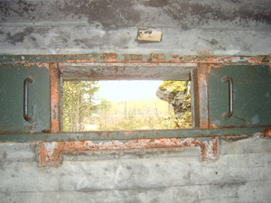

Det finns endast ett kulsprutevärn av denna typ på Sjöänd Skans. Värnet är försett med 55 cm taktäckning av betong samt 75 cm sidotäckning i vibrobetong. Det ansågs därför fullträffssäkert för en 15 cm artillerigranat. Värnet hade en besättning av 6 man och är försett med 3 embrassyrer, varav två är riktade bakåt, medan den tredje är riktad mot vägen.
För att skydda värnets front mot väster, finns ett antal gevärsvärn samt ett öppet kulsprutevärn.
